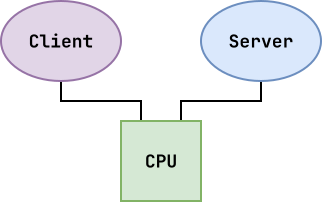
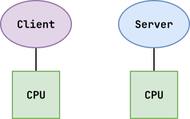
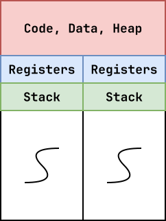
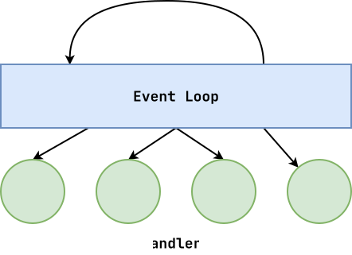

Logistics¶
-
Interview 01: Check timeslots!
-
Study Guide 01: Spoon feed!
Concurrency: Questions¶
-
What exactly is concurrency? parallelism?
-
What are some examples?
-
What are some challenges?
How do we overlap I/O and compute within a single process?
-
What system calls can we use?
-
How do we use these system calls?
Concurrency: Motivation¶
We want to create an application,
counter, that does the following:-
Periodically increments a
counter. -
Provides a shell prompt that allows the user to enter in a
command:
Command Description count Returns the current value of counterreset Resets counter to 0exit Quit program Concurrency: Overview¶
Whenever we structure a problem such that we have multiple streams of execution, we have concurrency.

Whenever we have the hardware resources to simultaneously execute multiple streams of executions, we have parallelism.

Issues with concurrency and scheduling: Hard to know order of execution.
Concurrency: Internal¶
In addition to inter-process concurrency, we can also have internal concurrency within a single process:
-
Foreground vs Background
-
Mixing I/O and Computation
-
Signals
Example Applications:¶
-
GrubHub: Display UI / Animation while requests happen in the background.
-
Instagram: Apply filter in the background.
Concurrency: Threads¶
We can implement internal concurrency by dividing a process into multiple streams of execution.
Review: Machine State¶
-
Address Space [~]
-
Kernel State [v]
-
Execution Context [x]

Concurrency: Interview Question¶
Given
int f() { int i; ... }If two threads run
f(),
is there sharing?No,
iis on the stack.Given
int g(char *s) { *s = ____; ... }If two threads run
g(),
is there sharing?Maybe, depends on what
sis pointing to.Concurrency: Sharing Problem¶
-
Shared Data -> Critical Section
-
Uncontrolled Scheduling -> Race Condition
-
Need for Atomicity -> Mutual Execution
Events: Overview¶
If we only need to overlap I/O and computation, we can use events to provide concurrency without parallelism:
-
Register interest in events (callbacks).
-
Event loop waits for event and then invokes handlers.
-
Handlers generally short-lived and not pre-empted.

Events: counter.c¶
int main(int argc, char *argv[]) { bool prompt = true; int counter = 0; char buffer[BUFSIZ]; while (true) { /* Display prompt */ if (prompt) { fputs(PROMPT, stdout); fflush(stdout); prompt = false; } /* Poll STDIN */ struct pollfd pfd = {STDIN_FILENO, POLLIN|POLLPRI, 0}; int result = poll(&pfd, 1, TIMEOUT); /* Process event */ if (result < 0) { /* Error */ fprintf(stderr, "Unable to poll: %s\n", strerror(errno)); } else if (result == 0) { /* Update counter */ counter++; } else { /* Handle command */ if (!fgets(buffer, BUFSIZ, stdin)) { break; } buffer[strlen(buffer) - 1] = 0; if (strcmp(buffer, "count") == 0) { fprintf(stdout, "Counter is %d\n", counter); } else if (strcmp(buffer, "reset") == 0) { counter = 0; fputs("Counter is reset!\n", stdout); } else if (strcmp(buffer, "exit") == 0) { fputs("Bye!\n", stdout); break; } else { fprintf(stderr, "Unknown command: %s\n", buffer); } prompt = true; } } return 0; }$ yes count > input $ ./counter < input-
DDOS!!!
-
Handlers should be short-lived.
-
Concurrency, but no parallelism.
-